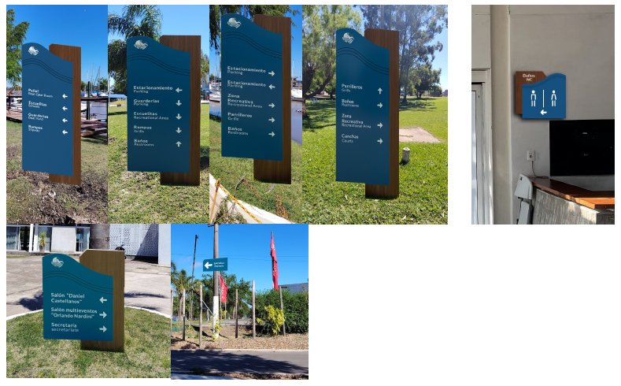

Descripción del Proyecto
El proyecto surge ante la necesidad de renovar un sistema de señalización deteriorado y poco coherente dentro de un predio amplio y complejo. La tarea fue diseñar un sistema integral que mejorara la orientación, reforzara la identidad institucional y se integrara al entorno natural del río.
A partir de relevamientos y análisis de circulación, se desarrolló un concepto basado en Unión, Naturaleza, Serenidad y Tradición, que dio forma a una retícula unificada, un sistema de pictogramas, paleta cromática náutica, tipografía legible y materiales resistentes al clima.
El resultado es una señalética clara, moderna y alineada con la esencia náutica e histórica del club, mejorando la experiencia y circulación de todos los usuarios.
Galería del Proyecto

Carteles que identifican espacios específicos dentro del predio, facilitando orientación y reconocimiento del lugar.

Señales direccionales que indican el recorrido hacia diferentes áreas, facilitando una circulación ordenada y clara.

Señales que comunican normas, restricciones o advertencias, asegurando seguridad y correcto uso de las instalaciones.

Piezas informativas que brindan datos de interés general, horarios, servicios e información institucional, mejorando la experiencia del usuario.

Pieza ornamental que fusiona estilo náutico con espacios sociales al aire libre, incorporando iluminación y elementos decorativos para reforzar identidad y ambiente acogedor.

La señalética del predio está deteriorada, especialmente los carteles exteriores dañados por el sol y las inundaciones, llegando a perder información importante como la ubicación de un extintor. Aunque hay intentos aislados de coherencia visual en Vela y Windsurf, la mayoría muestra variaciones de estilo, tamaño y recursos gráficos.
No existe polución visual, ya que los elementos son simples y están bien separados. Sin embargo, las propuestas actuales son pocas, inconsistentes y de bajo impacto, lo que evidencia la necesidad de un sistema señalético unificado y renovado.

Este moodboard reúne los valores esenciales del proyecto: unión, naturaleza, serenidad y tradición, guiando la estética y el espíritu del diseño.

Se determinó una paleta cromática náutica con azul predominante y marrón de madera, más tonos de contraste y textura, resaltando advertencias y manteniendo coherencia visual.

Se eligió la tipografía Lato, sans-serif, fresca y moderna, adecuada para textos grandes y cortos, transmitiendo claridad y estilo contemporáneo.

Sistema de pictogramas minimalista para orientación en la casa club y salones, garantizando legibilidad y coherencia estética.